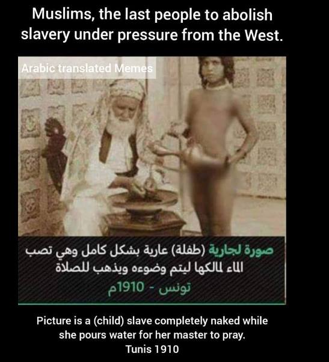

Aisha was fortunate in a way that she was handed over to Muhammad at the age of nine.
While the actual Islamic Ruling is:
- Even a breastfed small baby girl can be married, and her husband can undress her, and take every kind of sexual pleasure with her naked body (like kissing her naked body and rubbing his penis in her thighs to ejaculate.
- And if the Husband thinks she is strong enough at any age before puberty (may it be 6 or 7 years or later) to bear the pain of penetration in her vagina, then he can also penetrate. And if the husband makes a mistake and harms the minor girl by penetrating her vagina, still he has committed no sin or crime.
The largest Islamic website islamweb.net gave this fatwa (link 1, 2, 3, 4):
فإنه لا حرج في تقبيل الزوجة الصغيرة بشهوة والمفاخذة ونحو ذلك ولو كانت لا تطيق الجماع، وقد بين العلماء رحمهم الله تعالى أن الأصل جواز استمتاع الرجل بزوجته كيف شاء إذا لم يكن ضرر، وذكروا في ذلك استمناءه بيدها ومداعبتها وتقبيلها وغير ذلكThere’s no issue in the sexual kissing, thighing..etc of a minor wife, even if she can't yet endure sexual intercourse. Scholars have stated that the default ruling is that a man can enjoy his wife however he wants as long as no harm is caused. The examples they mentioned for this include masturbating with her hand, fondling, kissing, etc.
Reference:
فتاوى الشبكة الإسلامية، المكتبة الشاملة، ج3 ص8445
The Fatawa of the Islamic web, archived by Al-Maktabah Al-Shamilah library in 2009, vol.3 p.8445
And another one of the largest Websites for Muslims is Islamonline.net, which says a similar thing (link 1, 2):
فإنه لا ضررَ في الإنزالِ بين فخذي الصغيرة التي لا تطيقُ الجماع وتتضررُ به إذا كان ذلك الإنزالُ بدونِ إيلاج، وقد بَيَّنَ العلماءُ أن الأصلَ هو جوازُ استمتاعِ الرجلِ بزوجتِه كيف شاء إذا لم يكن ضرر
There is no problem if husband rubs his penis between the thighs of minor girl in order to ejaculate the sperm, even the minor girl does not possess the ability for penetration... According to the Islamic Scholars husband is allowed to enjoy the minor wife in every possible way till the time she is not harmed.
More Fatwas about "مفاخذہ" (i.e. thighing) are present here.
Table of Contents:
- Handing over Captive Minor girls to Jihadists and Buying minor slave girls from Islamic Bazaars of Slavery for sexual pleasure
- Fatwas of 4 Sunni Fiqhs
- Verse 65:4 proves marriage with small prepubescent girls is Halal Allah
- Shia Islam: vagina and anus becoming one due to penetration in minor girls
- Dangers for minor girls if they are used for sexual pleasures
- Does verse 4:6 prohibit marriage with minor girls?
- Islamic Excuse: Shariah didn't stipulate any age for Nikah, so it is a matter of Ijtehaad
- Either the Quran supports marriage with minor girls or it's linguistically imperfect and flawed
- Extreme Dangers to 9 years old Mothers and their babies
Handing over Captive Minor girls to Jihadists and Buying minor slave girls from Islamic Bazaars of Slavery for sexual pleasure
A free minor girl may have some protection that her father does not hand her over to her husband till she is 9 years old, or strong enough to bear the penetration. Nevertheless, minor slave girls in Islam were totally vulnerable and they had no fathers there to protect them.
Muslim men got their hands upon minor slave girls by making them captives through wars, or directly buying them from the Islamic Bazaars of slavery.
Imam Abdullah Ibn Abi Zayd (also known as the younger Imam Malik) wrote in his Maliki Fiqh Book (link):
ولا يفرق بين الام وولدها في البيع حتى يثغر
A slave-mother and her baby could be separated from each other and sold (in the Bazars of slavery) after baby has his two molar tooth (i.e. about 6 months)
A mother could only weep the tears of blood if her 6 months old baby is separated from her and sold in the slave market and then used for sexual pleasure by the Muslim owner.
Imam Abdullah Ibn Abi Zayd (who is also known as the younger Imam Malik), writes in his Fiqh book (link):
واستبراء الامة في انتقال الملك حيضة انتقل الملك ببيع أو هبة أو سبي أو غير ذلك. ومن هي في حيازته قدحاضت عنده ثم إنه اشتراها فلا استبراء عليها إن لم تكن تخرج. واستبراء الصغيرة في البيع إن كانت توطأ ثلاثة أشهر
And the Istibra (i.e. waiting period) of a slave woman during the transfer of ownership occurs through sale, gift, capture, or other means. If a person possesses a slave woman who is menstruating, and then he purchases her, there is no requirement for Istibra (i.e. waiting period) .... As for the Istibra (waiting period) of a minor slave girl through sale is concerned, then it is three months.
And Imam Ibn Qayyam al-Jawziyya recorded (link):
في الفصول روى عن أحمد في رجل خاف أن تنشق مثانته من الشبق أو تنشق انثياه لحبس الماء في زمن رمضان يستخرج الماء ولم يذكر بأي شيء يستخرجه قال: “وعندي أنه يستخرجه بما لا يفسد صوم غيره كاستمنائه بيده أو ببدن زوجته أو أمته غير الصائمة فإن كان له أمة طفلة أو صغيرة استمنى بيدها وكذلك الكافرة ويجوز وطؤها فيما دون الفرج فإن أراد الوطء في الفرج مع إمكان إخراج الماء بغيره فعندي أنه لا يجوز لأن الضرورة إذا رفعت حرام ما وراءها
Ahmed said about a man who feared that sperm would flow from his penis or that his testicles were unable to retain semen during Ramadan, he can ejaculate. But he didn’t say with what. In my opinion, he must release it with what would not spoil the fast of others. Like masturbating with his hand, or against the body of his wife or a slave who is not fasting. If he has a child or a small slave, let him masturbate with her hand. The Same for the unbelieving woman, he can penetrate her but not in her vagina. But if he wants to penetrate her vagina while he has other options to ejaculate, this would not be allowed in my opinion. If the need is fulfilled, it is forbidden to go beyond.
Islam handed over captive minor girls to Jihadists, where they were alone in their tents and fully on their mercy. There was no one to stop them from raping these small captive girls.
And it was a regular practice of Muhammad's Companions to rape minor PRISONER girls. Ali raped a minor captive girl on the same night when she was made captive after the war.
Narrated Buraydah:
I hated Ali as I had never hated anyone. ... The Prophet sent to us Ali, and among the female captives was a slave girl who was the finest of the female captives, and he apportioned the Khums (one-fifth of war booty given to the Prophet and his family). Ali divided the shares, and his head was dripping (after taking a ritual bath following sexual intercourse with the slave-girl). We said: "O Abu al-Hasan (i.e. Ali), what is this?!" Ali replied: "Did you not see the slave-girl who was among the female captives? I divided the shares and apportioned Khumus. Then she became part of the Khumus. Then she became part of the household of the Prophet, and then she became part of the house of Ali, and (thus) I had sexual intercourse with her." ...
Grading: Classed Sahih by al-Arna'ut
Istibra is a period of sexual abstinence required till the first period of the captive girl is over. This is to ensure no confusion on paternity. Since Ali raped that captive girl the same night without any Istibra, thus some people criticized this action of Ali.
Ibn Hajar al-Asqallani answered this criticism and wrote:
وقد استشكل وقوع على على الجارية بغير استبراء وكذلك قسمته لنفسه فأما الأول فمحمول على أنها كانت بكرا غير بالغ ورأى أن مثلها لا يستبرأ كما صار إليه غيره من الصحابة
"It was problematic that Ali Had sexual intercourse with the slave-girl without observing Istibra, and also that he apportioned a share for himself.
As for the first issue, it is understood that she was a virgin and not pubescent. He recognized that someone like her need not observe Istibra, and it is in accordance with the practice of other Companions."
Ibn Hajar, Fath al-Bari 8/67.
Musannaf Ibn Abi Shaybah 16906:
Chapter: Regarding the man who buys a slave-girl, may he (immediately) take pleasure in anything of her, and does it exclude the vulva or not?
Waki narrated to us from Ali bin al-Mubarak, from Yahya bin Abi Kathir, from Ikrimah, regarding the man who buys a prepubescent slave-girl, even one younger than that. He said, "There is nothing wrong with touching her before observing Istibra."
Not studied: All narrators and isnad (chain of transmission) links are of Sahih al-Bukhari. The link of Ikrimah and Yahya occurs in Bukhari 360, 1107, 1534, 1706, 1809. The chain of Yahya, Ali bin al-Mubarak, and Waki occurs in Bukhari 945, 4922.
Musannaf Ibn Abi Shaybah 16907َ:
Zaid bin Hubab narrated to us from Hammad bin Salamah, from Iyas bin Mu'awiyah, regarding a man who bought a prepubescent slave-girl, do not those like her have sexual intercourse? He said, "There is nothing wrong with performing the sexual act upon her without observing Istibra."
Not studied:
All narrators are of Sahih Muslim: Hammad bin Salamah (86 times) and Zaid bin Hubab (16 times). The link of Iyas bin Mu‘awiyah and Hammad is documented by al-Dhahabi. The link of Hammad and Zayd bin Hubab is documented within Musnad Ahmad 21923, in which al-Arna’ut writes:
“Its isnad is hasan. Its men are thiqat (trustworthy) except for Sa‘id bin Jumhan, who is saduq (sincere) among the men narrated by the authors of the Sunans.”
And Imam Bukhari recorded the following traditions:
ولم ير الحسن بأسا أن يقبلها أو يباشرها. وقال ابن عمر ـ رضى الله عنهما ـ إذا وهبت الوليدة التي توطأ أو بيعت أو عتقت فليستبرأ رحمها بحيضة، ولا تستبرأ العذراء. وقال عطاء لا بأس أن يصيب من جاريته الحامل ما دون الفرج.
Translation:
Al-Hasan did not see any harm in kissing or having sexual intercourse with a female slave. Ibn Umar (may Allah be pleased with them both) said: "If a female slave who has been engaged in sexual intercourse is given as a gift, sold, or freed, she should be purified by waiting for her menstrual cycle. However, a virgin does not require purification (i.e. the minor girls are also virgins)." And Atta said if a slave woman had become pregnant (from the earlier owner/husband), then still pleasure could be derived from whole of her body, except for her vagina.
The Risala is a famous treatise of Maliki fiqh (jurisprudence). It says the same i.e. virgin woman (including virgin minor girls) don't need any waiting period and can be raped immediately.
The Risalah, 33:5 (Maliki Fiqh):
Istibra' is observed in the case of a slavegirl who changes ownership. It is one menstruation. Ownership changes by selling, giving away, capture, or any other way. If the woman menstruates after being in the possession of the new master (i.e. she was a minor girl) before he has bought her, then she does not have to observe an istibra' if she has not gone out. The istibra' for a child when she is sold is three months as it is for a woman who no longer menstruates. There is no istibra' for a woman who has never had intercourse.
Please imagine the profound trauma endured by the small girls who experienced the unimaginable horrors inflicted upon them. In a single day, they tragically lost their fathers and brothers to Muslims. Shortly thereafter, they were forcibly expelled from their homes, subjected to looting by the same perpetrators. To compound their suffering, they were then cruelly torn apart from their mothers on that very same night and then they were raped by Jihadists.
Muhammad didn't even grant the poor small girls the period of one month to come out of the shock of the killing of their fathers and brothers (like the Jews/Christians did), before raping them (link).
If any God really exists, then can He ever bring such shame to humanity?
Unfortunately, many people have lost all their Humanity and all their Shame due to religious brainwashing. They still come out and start defending Islam against this ugliest crime which it committed against humanity.
This was the practice of Companions and all Muslims of the last 1400 years, till the secular non-religious West saved humanity against these evil religious practices of slavery and raping.
Fatwas of 4 Sunni Fiqhs
From al-‘Umda fi ‘l-fiqh, page 201 (Hanbali law manual):
-
“The father is entitled to give his minor children, male and female, and his virgin daughters, in marriage without their consent. In the case of the adult virgin, seeking her consent is recommended.”
From al-Risala, 32.2a. (Maliki law manual):
-
“A father can arrange the marriage of his virgin daughter without her permission even if she is beyond the age of puberty. It is up to him whether he consults her or not.”
From the Mukhtasar al-Quduri (Hanafi law manual):
-
“If the father, or grandfather, marries them off, then there is no option for them after attaining the age of majority, but if someone other than the father or the grandfather marries them off, then each one of the two has an option: 1. If he/she wants, he/she may remain in the marriage, or 2. If he/she wants, he/she may repudiate [it].”
From Reliance of the Traveler, page 522 (Shafi’i law manual):
-
“Guardians are of two types, those who may compel their female charges to marry someone, and those who may not. (1) The only guardians who may compel their charge to marry are a virgin bride's father or father's father, compel meaning to marry her to a suitable match (def: m4) without her consent.” [Note: This condition of being only a father/grandfather to marry a small girl is not correct. We have already presented hadith of 'Aisha above, which tells us if a guardian of a small orphan girl gets lust for her due to her beauty, then he can forcefully take her into his Nikah, even if he is an old man].
From IsalmQA:
If she has not reached the age of puberty, then her father has the sole right to arrange her marriage and does not have to ask her permission.
Ibn Qudaamah (may Allaah have mercy on him) said: With regard to a virgin who is still a minor, there is no difference of opinion concerning her (i.e., that her father may marry her off even if she objects). Ibn al-Mundhir said: Every scholar from whom we learned was agreed that it is permissible for a man to marry off his virgin daughter who is still a minor, if he marries her to someone who is compatible, and it is permissible for him to marry her off even if she objects and refuses.” Al-Mughni, 9/398

Verse 65:4 proves marriage with small prepubescent girls is Halal Allah
At a certain juncture, it becomes necessary to transcend the 1400-year-old tenets of Sharia law. There are no alternative paths available to us. For example, the Quran says that even a minor girl (under the age of 9) could be married and penetrated.
(Quran 65:4) And if you are in doubt about those of your women who have despaired of menstruation, (you should know that) their waiting period is three months, and the same applies to those (minor girls) who have not menstruated as yet.
Modoudi's Tafseer of verse 65:4 (link):
They may not have menstruated as yet either because of young age, or delayed menstrual discharge as it happens in the case of some women, the waiting-period of such a woman is the same as of the woman, who has stopped menstruation, that is three months from the time divorce was pronounced.
Here, one should bear in mind the fact that according to the explanations given in the Qur'an the question of the waiting period arises in respect of the women with whom marriage may have been consummated, for there is no waiting-period in case divorce is pronounced before the consummation of marriage. (Al-Ahzab: 49). Therefore, making mention of the waiting-period for the girls who have not yet menstruated, clearly proves that it is not only permissible to give away the girl in marriage at this age but it is also permssible for the husband to consummate marriage with her. Now, obviously no Muslim has the right to forbid a thing which the Qur'an has held as permissible.
And just in case someone tries to claim that Abul A'la al-Maududi is a modern scholar, then here are a few excerpts from other classical exegetes (Credit):
-
Al-Tabari: ( وَاللائِي لَمْ يَحِضْنَ ) يقول: وكذلك عدد اللائي لم يحضن من الجواري لصغر إذا طلقهنّ أزواجهنّ بعد الدخول.
-
Translation: (And those who have not menstruated): Likewise is the waiting period of those who did not menstruate among the little girls due to being too young young if their husbands divorced them after entering.
-
-
Qurtubi: قوله تعالى : واللائي لم يحضن يعني الصغيرة فعدتهن ثلاثة أشهر
-
Translation: The Almighty saying: What did not menstruate, meaning the little ones, their waiting period is three months
-
-
Ibn Kathir : وكذا الصغار اللائي لم يبلغن سن الحيض أن عدتهن كعدة الآيسة ثلاثة أشهر ; ولهذا قال : ( واللائي لم يحضن )
-
Translation: As well as the young girls who did not reach the age of menstruation that their waiting period is the same as the old woman: Three months; That is why he said: (And the one who did not menstruate)
-
-
Baghawi: ( واللائي لم يحضن ) يعني الصغار اللائي لم يحضن فعدتهن أيضا ثلاثة أشهر .
-
Translation: (And the one who did not menstruate) means the young girls who did not menstruate, their waiting period is also three months.
-
-
Saadi: { وَاللَّائِي لَمْ يَحِضْنَ } أي: الصغار، اللائي لم يأتهن الحيض بعد، و البالغات اللاتي لم يأتهن حيض بالكلية
-
Translation: {And the one who did not menstruate}, meaning: the young, who has not yet reached menstruation, and the adults who never menstruated
-
Tafsir Ibn Kathir, under the commentary of this verse 65:4 (link):
Ubay bin Ka`b said, "O Allah's Messenger! Some women were not mentioned in the Qur'an, the young (who yet not menstruate), the old (who don't menstruate due to old age) and the pregnant women.'' Allah the Exalted and Most Honored sent down this Ayah (ie. verse 65:4) وَاللاَّئِى يَئِسْنَ مِنَ الْمَحِيضِ مِن نِّسَآئِكُمْ إِنِ ارْتَبْتُمْ فَعِدَّتُهُنَّ ثَلَـثَةُ أَشْهُرٍ وَاللَّـتِي لَمْ يَحِضْنَ {Those in menopause among your women, for them the `Iddah, if you have doubt, is three months; and for those who have no courses (due to young age}
Ibn Abi Hatim recorded a simpler narration than this one from Ubay bin Ka`b who said, "O Allah's Messenger! When the Ayah in Surat Al-Baqarah was revealed prescribing the `Iddah of divorce, some people in Al-Madinah said, `There are still some women whose `Iddah has not been mentioned in the Qur'an. There are the young (who yet not menstruate), the old whose menstruation is discontinued, and the pregnant.' Later on, this Ayah 65:4 was revealed, وَاللاَّئِى يَئِسْنَ مِنَ الْمَحِيضِ مِن نِّسَآئِكُمْ إِنِ ارْتَبْتُمْ فَعِدَّتُهُنَّ ثَلَـثَةُ أَشْهُرٍ وَاللَّـتِي لَمْ يَحِضْنَ (Those in menopause among your women, for them the `Iddah, if you have doubt, is three months; and for those who have no courses (due to young age).)''
The largest Sunni Fatwa Website Islamweb.Net wrote (link):
والآثار الدالة على اشتهار الزواج المبكر في عهد الصحابة من غير نكير كثيرة فقد زوج علي بن أبي طالب رضي الله عنه ابنته أم كلثوم من عمر بن الخطاب رضي الله عنه وقد ولدت له قبل موت النبي صلى الله عليه وسلم وتزوجها عمر رضي الله عنه وهي صغيرة لم تبلغ بعد، رواه عبد الرزاق في المصنف، وابن سعد في "الطبقات". وعن عروة بن الزبير: أن الزبير رضي الله عنه زوج ابنة له صغيرة حين ولدت. رواه سعيد بن منصور في سننه، وابن أبي شيبة في المصنف بإسناد صحيح. وقال الشافعي في "كتاب الأم": وزوج غير واحد من أصحاب رسول الله صلى الله عليه وسلم ابنته صغيرة.
There are many evidences of the popularity of early marriage during the time of the Companions. Ali ibn Abi Talib, married his daughter Umm Kulthum to Omar ibn al-Khattab. She was born to him before the death of the Prophet. Omar, may God be pleased with him, married her when she was young and had not reached puberty yet. It was narrated by Abd al-Razzaq in al-Musannaf, and Ibn Sa`d in al-Tabaqat.
And it is narrated on the authority of Urwa bin Al-Zubayr: Al-Zubayr, may God be pleased with him, married his young daughter when she was born. It was narrated by Saeed bin Mansour in his Sunan, and Ibn Abi Shaybah in al-Musannaf with an authentic chain of narrators.
Al-Shafi’i said in his book “Kitab al-Umm”: And more than one of the companions of the Messenger of God, married their young daughters.
And the largest Muslim Fatwa website Islam Questions Answers says there is a Consensus (i.e. Ijma) upon it among all the Salaf (i.e. early) generations of Muslims:
https://islamqa.info/en/12708
Marriage to a young girl before she reaches puberty is permissible according to sharee’ah, and it was narrated that there was scholarly consensus on this point (i.e. All jurists along with 4 Imams agree upon it) ... The scholars are (also) unanimously agreed (Ijma) that a father may marry off his young (minor) daughter without consulting her.
At another place, this same Saudi Mufti writes:
https://islamqa.info/en/27305
If she has not reached the age of puberty, then her father has the sole right to arrange her marriage and does not have to ask her permission.
Ibn Qudaamah (may Allaah have mercy on him) said: With regard to a virgin who is still a minor, there is no difference of opinion concerning her (i.e., that her father may marry her off even if she objects). Ibn al-Mundhir said: Every scholar from whom we learned was agreed that it is permissible for a man to marry off his virgin daughter who is still a minor, if he marries her to someone who is compatible, and it is permissible for him to marry her off even if she objects and refuses.” Al-Mughni, 9/398
At another place, this same Saudi Mufti writes:
https://islamqa.info/ar/answers/264001
قال ابن عبد البر رحمه الله :" أجمع العلماء على أن للأب أن يزوِّج ابنته الصغيرة ، ولا يشاورها، وأن رسول الله صلى الله عليه وسلم تزوَّج عائشة بنت أبي بكر ، وهي صغيرة بنت ست سنين ، أو سبع سنين ، أنكحه إياها أبوها " انتهى من " الاستذكار " ( 16 / 49 ). وقال ابن حجر – رحمه الله - : " والبكر الصغيرة يزوِّجها أبوها اتفاقاً ، إلا من شذ " انتهى من " فتح الباري " ( 9 / 239 ) . .... وإذا زوج الأب ابنته الصغيرة غير البالغة، فلا خيار لها إذا بلغت .
... Ibn Abd al-Barr, may Allah have mercy on him, said: "Scholars unanimously agree that a father has the right to marry off his young daughter without her consent, and he is not required to consult her. The Prophet, peace be upon him, married Aisha, the daughter of Abu Bakr, when she was a young girl of six or seven, and her father married her to him." (See "Al-Istidhkar" 16/49). Ibn Hajar, may Allah have mercy on him, said: "The young virgin girl can be married off by her father without her consent, except in rare cases." (See "Fath al-Bari" 9/239) ... If the father marries off his non-adult daughter, she has no choice once she reaches adulthood.
Here is a fatwa from a Hanafi Deoband Mufti (link):
Question:
Is it allowed to penetrate into a wife who is still a minor-girl? ....
Answer:
....Yes, it is allowed to penetrate into a wife who is still a minor-girl, nevertheless guardians of the minor girl should keep it in mind and marry her by keeping this issue in their minds ...
Fatawa Alamgiri (Authentic Book of Hanafi Fiqh) (link):
Translation:
And the correct view is this that it is allowed to penetrate too in the vagina of that minor girl, who is strong enough and her vagina and anus does not become one due to penetration ... and if a (non-adult) boy of age 10 penetrates in the vagina of a woman, then there is no need for a boy to take a bath, while woman has to take a bath ... and if an adult man penetrates into a non-adult girl, then adult man has to take the bath, but bath is not obligatory upon the non-adult girl.
ٰImam Nawawi wrote in his Sharh of Sahih Muslim (link):
وأما وقت زفاف الصغيرة المزوجة والدخول بها : فإن اتفق الزوج والولي على شيء لا ضرر فيه على الصغيرة : عُمل به ، وإن اختلفا : فقال أحمد وأبو عبيد : تجبر على ذلك بنت تسع سنين دون غيرها ، وقال مالك والشافعي وأبو حنيفة : حدُّ ذلك أن تطيق الجماع ، ويختلف ذلك باختلافهن ، ولا يضبط بسنٍّ ، وهذا هو الصحيح
And the sleeping with a minor age wife and having intercourse with her, if the husband and the guardian of the wife agreed upon something that is not harmful for the minor age wife, it is legitimate and if they did not agree upon then Ahmad and Aboo Ubayd say that if she is at nine years of age she can be forced to (do intercourse with her husban), not the younger ones, and Malik and Shafi’i and Aboo Hanifah say that the criteria is that she can bear intercourse (even if she is younger than 9), and the differences of opinion about this issue comes from these scholars. But the correct opinion is that it does not depend upon age.
The consensus of Sahaba (companions) that a father can wed his minor daughter (link):
نُقل الإجماع على جواز تزويج الأب البكر الصغيرة – على الأقل إجماع الصحابة – وممن نقل الإجماع: الإمام أحمد في ” المسائل ” – رواية صالح – (3/ 129) والمروزي في ” اختلاف العلماء ” (ص 125)، وابن المنذر في ” الإجماع ” (ص91) وابن عبد البر في ” التمهيد “، والبغوي في ” شرح السنة ” (9/ 37) والنووي في ” شرح مسلم ” (9/ 206) وابن حجر في” الفتح ” (12/ 27)، والباجي في ” المنتقى ” (3/ 272)، وابن العربي في ” عارضة الأحوذي ” (5/ 25)، والشنقيطي في ” مواهب الجليل ” (3/ 27).
The consensus was transmitted on the permissibility of a father marrying off the minor Virgin girl – at least the consensus of the Companions – and among those who transmitted the consensus were: Imam Ahmad in “Al-Masseel” – riwayat salih – (3/129) and Al-Marwazi in “aikhtilaf al-ulama” (p. 125), and Ibn Al-Mundhir in “al-ijma” (p. 91) and Ibn Abd al-Barr in “Al-Tamheed”, al-Baghawi in “Sharh al-Sunnah” (9/37), al-Nawawi in “Sharh Muslim” (9/206), Ibn Hajar in “Al-Fath” (12/27), and al-Baji in “Al-Muntaqa” (3/272), Ibn al-Arabi in “Ardah al-Ahwadhi” (5/25), and al-Shinqiti in “Mawahib al-Jaleel” (3/27).
Imam Bukhari on Nikah with minor child girl:
Imam Bukhari gave the following heading to the chapter about the marriage of Aisha:
Sahih Bukhari, Book of Marriage (link):
باب إِنْكَاحِ الرَّجُلِ وَلَدَهُ الصِّغَارَ
A man can give his minor daughter in marriage
لِقَوْلِهِ تَعَالَى: {وَاللاَّئِي لَمْ يَحِضْنَ} فَجَعَلَ عِدَّتَهَا ثَلاَثَةَ أَشْهُرٍ قَبْلَ الْبُلُوغِ.
Allah said (in Quran 65:4): ... and for those minor girls who didn't start mensturating. This means their waiting period is 3 months
عَنْ عَائِشَةَ ـ رضى الله عنها ـ أَنَّ النَّبِيَّ صلى الله عليه وسلم تَزَوَّجَهَا وَهْىَ بِنْتُ سِتِّ سِنِينَ، وَأُدْخِلَتْ عَلَيْهِ وَهْىَ بِنْتُ تِسْعٍ، وَمَكَثَتْ عِنْدَهُ تِسْعًا.
Narrated `Aisha:
that the Prophet (ﷺ) married her when she was six years old and he consummated his marriage when she was nine years old, and then she remained with him for nine years (i.e., till his death).
Imam Ibn Hajar al-Asqallani writes in his commentary of Sahih Bukhari (link):
" يجوز تزويج الصغيرة بالكبير إجماعا ولو كانت في المهد"
There is a consensus (Ijma) that an adult man can marry any minor girl, even if she is so small that she is in a cradle.
Imam Bukhari also recorded that a woman had already become a grandmother at the age of 21.
Sahih Bukhari (link):
باب بلوغ الصبيان وشهادتهم وقول الله تعالى وإذا بلغ الأطفال منكم الحلم فليستأذنوا وقال مغيرة احتلمت وأنا ابن ثنتي عشرة سنة وبلوغ النساء في الحيض لقوله عز وجل واللائي يئسن من المحيض من نسائكم إلى قوله أن يضعن حملهن وقال الحسن بن صالح أدركت جارة لنا جدة بنت إحدى وعشرين سنة
... Hasan bin Saleh said, "I saw one of my neighbors who had become a grandmother at the age of twenty-one."
Verse 4:3 also proves marriage with small girls is fully allowed in Islam
If a minor orphan girl is in the guardianship of any man, then he can marry her even without her consent.
(Quran 4:3) And if you fear that you shall not be able to deal justly with the orphan girls, then marry (other) women of your choice ...
Sahih Bukhari, Book of Nikah (link):
Narrated Aisha":
(regarding) the Verse: 'And if you fear that you shall not be able to deal justly with the orphans...' (4.3) It is about the (minor) orphan girl who is in the custody of a man (due to her minor age) who is her guardian, and he intends to marry her because of her wealth, but he treats her badly and does not manage her property fairly and honestly. Such a man should marry women of his liking other than her.
For more details, please read our article:
Due to penetration in minor girls, their vagina and anus can become one
There is a risk of permanent damage to a minor girl due to penetration. Her vagina and anus may become one.
We read in Fatawa Alamgiri (Authentic Book of Hanafi Fiqh) (link):
And the correct view is this that it is allowed to penetrate too in the vagina of that minor girl, who is strong enough and her vagina and anus does not become one due to penetration ...
This video from "Nabi Asli" makes it more clear.
Sharia Law book titled "Reliance of the Traveler"( or Umdat al Salik in Arabic), which is one of the most renowned classical manuals of fiqh, on page 592 (link):
The Indemnity for Bodily InjuriesA full indemnity is also paid for injuries which paralyze these members, or for injuring the peritoneal wall between the vagina and rectum (anus) so they become one aperture.
What does this mean?
The forced penetration by an adult man to the underage girl causes her small vagina to rupture and rip apart up to her rectum. It is known as "Fistula" in medical terminology.
You can imagine the pain that the little girl suffers because of this action.
This is another Sharia book titled Heavenly Ornaments or Bahisti Zewar (page 50) that also mentions this type of injury. The paragraph talks about ghusl or ritual washing after having intercourse:
If a woman is underage but not so small that if one has intercourse with her there is a fear of the vaginal tissues tearing to such an extent that the vagina and anus will virtually come together; then by the insertion of the glans of the penis into her vagina ghusl will become Fardh (i.e. obligatory) on the man if he has reached the age of puberty. However, if there is the aforementioned fear in a very minor girl, then mere insertion of the penis does not render ghusl obligatory.
This means that if the man is an adult and he is worried that inserting his genitalia into a prepubescent, or infant or a baby girl can cause the tearing of the vagina to the anus, then just insert the head of his penis. .... Unbelievable!
We can read a similar explanation from another Sharia book titled A Digest of Moohummudan Law, Part II, translated by Neil Baillie. This is about the Marriage Law in Islam, page 26:
When a man has had sexual intercourse with a girl under the age of nine years, and has ruptured the parts (i.e. her vagina, tearing apart because of what the adult man did to her). It is unlawful for him to have further connection with her (i.e. he cannot have a sex with her), but she is not released from her ties, if connected with him by marriage or slavery. This means that if the vagina ruptures, then the man should not continue the coitus. But that doesn't mean that the girl can divorce the man, if the man is her husband, or that the girl is free if the man is her slave master. If no rupture has taken place, the prohibition is not incurred according to the most valid opinion.
This means that if no rupture happens, then the man can go ahead to continue with the coitus. But if the rapture happens, then such a girl cannot have sex her entire life.
This is DOUBLE cruelty against the poor minor girl:
- First and foremost, she is condemned to endure the anguish and physical trauma of the fistula throughout her entire existence.
- Secondly, she is trapped in a perpetual state of being unable to liberate herself from him through divorce, forced to confront the presence of the abhorrent individual who violated and subjected her to such excruciating torment. This inflicts not only physical agony but also profound mental anguish upon her.
The fact that the rupture incident is mentioned repeatedly in many Sharia books, means that such horrific accidents happen often during child marriages.
Shia Islam: vagina and anus becoming one due to penetration in minor girls
Shia Islam also allows marriage with a minor girl.
Shia Imam Khomeini wrote (Link):
مسألة 12 : لا يجوز وطء الزوجة قبل إكمال تسع سنين ، دواما كان النكاح أو منقطعا ، و أما سائر الاستمتاعات كاللمس بشهوة و الضم و التفخيذ فلا بأس بها حتى فى الرضيعة ولو وطئها قبل التسع ولم يفضها لم يترتّب عليه شيء غير الإثم على الأقوى، وإن أفضاها - بأن جعل مسلكي البول والحيض واحدا أو مسلكي الحيض والغائط واحدا - حرم عليه وطؤها أبدا، لكن على الأحوط في الصورة الثانية. وعلى أيّ حال لم تخرج عن زوجيّته على الأقوى، فيجري عليها أحكامها من التوارث وحرمة الخامسة وحرمة اُختها معها وغيرها
Tahreer al-Waseelah, volume 2, page 343
Issue #12: It is not permissible to have sexual intercourse (with one’s wife) before she reaches 9 years in age, be it in Nikaah (permanent marriage) or Mut’a (temporary marriage). As for all other pleasures such as lustful touch, embracing, and thighing, there is no problem in it, even if she is a suckling baby. A man having intercourse with a girl younger than nine years of age has not committed a crime, but only an infraction, if the girl is not permanently damaged by vagina and anus becoming one. If the girl, however, is permanently damaged, the man must provide for her all her life. But this girl will not count as one of the man's four permanent wives. He also is not permitted to marry the girl's sister.
And Shia Imam Sistani wrote:
If a person marries a non-bālighah girl, it is unlawful for him to have sexual intercourse with her until she has completed nine lunar years. However, if he does have sexual intercourse with her before then, it will not be unlawful for him to have sexual intercourse with her after she reaches bulūgh even if she has developed a cloacal abnormality (the meaning of which was explained in Ruling 2399). And if she has developed a cloacal abnormality, he must pay her blood money (diyah), which is equivalent to the blood money for killing a human being, and he must also pay for her living expenses forever, even after divorce. In fact, based on obligatory precaution, even if that girl marries someone else after getting divorced [he must still pay for her living expenses] ....
Cloacal abnormality explained in #2399 point 6:
“the woman had a cloacal abnormality, meaning that her urethral opening and vagina had become one [vesicovaginal fistula], or her vagina and anus had become one [rectovaginal fistula], or all three had become one [persistent cloaca], …”
More Shia Fatwas:
- Ayatullah Seestani in his book Minhaaj-us-Saliheen, vol. 3, page 1 and here.
- Ayatullah Khoei, the teacher of Ayatullah Sistani mentioned above, and the head of the Hawzah in Najaf till his death, in his book: Al-Mabani fi Sharh Urwat al-Wuthqa
- Ayatullah Muhammad Kazim Tabtaba’i Yazdi in his seminal work, al-Urwat al-Wuthqa, volume 5, page 502.
- Ayatullah Mohammad Fazel Lankarani in his book Tafseel ash-Sharee’ah fi Sharh Tahreer al-Waselah.
- Ayatullah Sayyid Muhammad Sadeq Rouhani in his book al-Urwat al-Wuthqa, volume 2, page 469.
- Ayatullah Muhsin al-Hakeem in his book Mustamsak al-Urwah, volume 14, page 79.
Actually, the condition of 9 years is only a precaution, while Shia Imams also allowed penetrating her vagina if she is even younger than 9 years:
Al Kafi – V 5 – The Book of Marriage Ch 112 H 3:
3 - محمد بن يحيى، عن أحمد بن محمد، عن ابن محبوب، عن ابن بكير عن هشام بن الحرث، عن عبد الله بن عمرو قال: قلت لأبي عبد الله أو لأبي جعفر (ع): الجارية يشتريها الرجل وهي لم تدرك أو قد يئست من المحيض؟ قال: فقال: لا بأس بأن لا يستبرئها.
Muhammad Bin Yahya, from Ahmad Bin Muhammad, from Ibn Mahboub, from Ibn Bukeyr, from Hisham Bin Al Haris, from Abdullah Bin Amro who said, ‘I said to Abu Abdullah or to Abu Ja’far, ‘The slave girl whom the man buys, and she has yet to be an adult, or has despaired from the menstruation’. So, the Imam said: ‘There is no problem if he does not clear her womb (i.e. observe any waiting period before penetrating in her vagina)’.
8-Year-Old Yemeni Child Dies at Hands Of 40-Year-Old Husband on Wedding Night
Please read this news (Reuters):
SANAA (Reuters) - An eight-year-old Yemeni girl died of internal bleeding on her wedding night after marrying a man five times her age, a social activist and two local residents said, in a case that has caused an outcry in the media and revived debate about child brides. Arwa Othman, head of Yemen House of Folklore and a leading rights campaigner, said the girl, identified only as Rawan, was married to a 40-year-old man late last week in the town of Meedi in Hajjah province in northwestern Yemen."On the wedding night and after intercourse, she suffered from bleeding and uterine rupture which caused her death," Othman told Reuters. "They took her to a clinic but the medics couldn't save her life."
Dangers for minor girls if they are used for sexual pleasures
Firstly: The rate of death among “Teen Mothers” and their babies is the highest
The whole internet is full of this information (link):
- The rate of death of Teen Mothers is the highest.
- And the rate of death among their babies is also the highest.
- And not only the death rate, but these children also suffer highly from other mental and physical handicaps.
- And birth becomes very often complicated and OPERATION has to be performed instead of natural birth.
Secondly: Psychiatrists are WISER than Allah
Islam sends a minor girl to an old man of the age of her father and grandfather so that that old man can take sexual pleasure from her.
But Psychiatrists claim that separating a minor girl from her parents, and then sending her alone to an old man for being used as a sexual object, causes a huge psychological depression to her.
While Allah claims that he is the All-Wisest, and he does not do any injustice to such a minor girl, and she is not depressed.
So, who is truthful?
Allah or these Psychologists?
Does verse 4:6 prohibit marriage with minor girls?
There was an Ijma (إجماع i.e. CONSENSUS) of Muslim Ummah that marriage with a minor girl is allowed. But in the present century, few modern Muslim Preachers (and the Quranists, i.e. those who reject Hadith) have started denying it. They are trying to misuse verse 4:6 as an argument to deny marriage to minor girls in Islam.
Verse 4:6:
وَٱبْتَلُوا۟ ٱلْيَتَٰمَىٰ حَتَّىٰٓ إِذَا بَلَغُوا۟ ٱلنِّكَاحَ فَإِنْ ءَانَسْتُم مِّنْهُمْ رُشْدًا فَٱدْفَعُوٓا۟ إِلَيْهِمْ أَمْوَٰلَهُمْ
And test the orphans until when they reached the age of marriage (Nikah), then if you perceive in them sound judgement then deliver to them their wealth.
Modern Muslim preachers claim that one gets sound judgement about his wealth when one is already an adult person. Thus, this means that Islam prescribed that one can marry only after becoming an adult.
Response:
Please note that the word Nikah has a double meaning in the Arabic language:
- According to the Islamic Sharia, "Nikah" is a terminology, whose meaning in Islamic Sharia is “marriage”.
- While the literal meaning of “Nikah” in the Arabic language is "To do Sexual Intercourse"
It becomes even more evident from another verse of Quran 17:34:
وَلَا تَقْرَبُوا۟ مَالَ ٱلْيَتِيمِ إِلَّا بِٱلَّتِى هِىَ أَحْسَنُ حَتَّىٰ يَبْلُغَ أَشُدَّهُۥ ۚ
Come not nigh to the orphan's property except to improve it, until he attains the age of full strength
The word أَشُدَّهُ (full strength) in this verse means the age when young boys and girls start feeling the desire/strength to do sexual intercourse.
Please note that:
- As far as Shar'i Nikah (marriage) is concerned, then there is no condition present in it of reaching the أَشُدَّهُ (i.e. Full Strength to do the act of intercourse).
- And the proof is that prophet Muhammad himself did the Shar'i Nikah with 'Aisha, when she was only 6 years old.
- And no one tests a 6 years old child for handing over his/her property to him/her, as a 6-year-old child has neither أَشُدَّهُ (Strength/Desire) nor he/she has any kind of “sound judgement” to look after his/her property.
Thus, the Shar'i Nikah has nothing to do with the أَشُدَّهُ (strength), as Muhammad did this Shar'i Nikah with 6 years 'Aisha.
Actually, even at the age of 9, when 'Aisha finally came to the house of Muhammad for the consummation of marriage, she was still not mentally sound enough to look after any property or business. It is evident from the following hadith:
Narrated `Aisha: I used to play with the dolls in the presence of the Prophet, and my girl friends also used to play with me. When Allah's Messenger (ﷺ) used to enter (my dwelling place) they used to hide themselves, but the Prophet would call them to join and play with me.
Fourthly, according to Islamic Sharia:
- When a girl reaches puberty, then she herself gets the right to give her consent for the marriage or to deny the marriage.
- But if she is a minor or prepubescent girl, then her father/guardian could wed her to anyone, even without her consent (link).
- And if she is prepubescent and also an orphan, then her guardian has the right to wed her with himself (even without her consent), in order to get her property and wealth.
It is evident from the following Hadith:
Narrated 'Urwa: that he asked `Aisha about the Statement of Allah: 'If you fear that you shall not be able to deal justly with the orphan girls, then marry (other) women of your choice, two or three or four; but if you fear that you shall not be able to deal justly (with them), then only one, or (the captives) that your right hands possess. That will be nearer to prevent you from doing injustice.' (4.3) `Aisha said, "O my nephew! (This Verse has been revealed in connection with) an orphan girl under the guardianship of her guardian who is attracted by her wealth and beauty and intends to marry her with a Mahr (bride-dowry) less than what other women of her standard deserve. So they (such guardians) have been forbidden to marry them unless they do justice to them and give them their full Mahr, and they are ordered to marry other women instead of them."
It is also evident from the following Quranic Verse:
You also read them (the guardians) in the Book concerning orphaned women (in your charge) to whom you deny their ordained rights and yet wish to take them in marriage, as well as in respect of helpless children, that you should be just in the matter of orphans." The good you do is known to God.
The orphan girl, in the above tradition, is a small orphan girl who has not yet reached puberty. It is due to the reasons that:
- Firstly, after becoming an adult, the guardian cannot compel her to marry him without her consent.
- Secondly, after becoming an adult, the guardian cannot marry her by giving her less than a standard dowry (i.e. Haq Mehr).
- Thirdly, after becoming an adult, she will get full control of her money and property too, and thus the guardian cannot take control of her property any more.
- Fourthly, after becoming an adult, she is no longer considered an orphan.
Moreover, Islamqa.com, one of the largest Fatwa sites on the internet, also refutes these modern Muslim preachers regarding verse 6:4 (link):
This verse 4:6 explains that an orphan’s money is given to him/her after they reach puberty and attain sound judgement. What’s meant by sound judgment is sound management of money. This can only happen after puberty.
“Reaching Nikah” mentioned in the verse means reaching puberty which can be known through sings such as menstruation for females and the growth of pubic hair. The verse used the expression “reaching Nikah” to actually mean “reaching puberty” because in most cases, it’s adults who perform Nikah. But this doesn’t mean that it’s not possible for non-adults to perform Nikah, which is permissible as proven by the Quran, Sunnah and the consensus of scholars. Plus, the same Surah and the same context of verses proves it (the permissibility of child marriage). (The verse that speaks about giving an orphan his money when he/she reaches Nikah is verse no.6) Verse no.3 says: “And if you fear that you shall not be able to deal justly with the orphangirls, then marry (other) women of your choice, two or three, or four but if you fear that you shall not be able to deal justly (with them), then only one or (the captives and the slaves) that your right hands possess. ”.
This verse proves it’s allowed to marry an orphan. And an orphan cannot be an adult. It’s reported in Sahih Bukhari Hadith no. 2494: “Narrated Urwah that he asked `Aisha regarding the Verse: 'If you fear that you shall not be able to deal justly with the orphan girls, marry (other) women of your choice.' (4.3) `Aisha said, "It is about an orphan girl under the custody of her guardian who being attracted by her wealth and beauty wants to marry her with Mahr less than other women of her status. So such guardians were forbidden to marry them unless they treat them justly by giving them their full Mahr. Then the people sought the verdict of Allah's Apostle for such cases, whereupon Allah revealed: 'They ask your instruction concerning women..' (4.127) “https://sunnah.com/bukhari:6965
Ibn Hajar (d.1449 AD) commented on this Hadith saying: “This shows it’s allowed to marry orphans who haven’t reached puberty. Because after puberty they can’t be called orphans.”
Muslim Preachers also claim that the Arabic word “Nisaa'” cannot refer to minor girls
Muslim preachers also come up with this excuse that the word Nisaa' refers only to mature, adult women, therefore 65:4 cannot be talking about pre-pubescent females.[13] This linguistic argument does not hold water, even just on the basis of the Qur'an itself as a text. The word merely means “women/females” and can refer to mixed groups of women of various ages, as the English "female" or "women." Here are some verses that use the word "nisaa'":
وَإِذْ نَجَّيْنَٰكُم مِّنْ ءَالِ فِرْعَوْنَ يَسُومُونَكُمْ سُوٓءَ ٱلْعَذَابِ يُذَبِّحُونَ أَبْنَآءَكُمْ وَيَسْتَحْيُونَ نِسَآءَكُمْ ۚ وَفِى ذَٰلِكُم بَلَآءٌ مِّن رَّبِّكُمْ عَظِيمٌ
And remember, We delivered you from the people of Pharaoh: They set you hard tasks and punishments, slaughtered your (newborn) sons and let your women-folk (i.e. newborn girls) live; therein was a tremendous trial from your Lord.
وَقَالَ ٱلْمَلَأُ مِن قَوْمِ فِرْعَوْنَ أَتَذَرُ مُوسَىٰ وَقَوْمَهُۥ لِيُفْسِدُوا۟ فِى ٱلْأَرْضِ وَيَذَرَكَ وَءَالِهَتَكَ ۚ قَالَ سَنُقَتِّلُ أَبْنَآءَهُمْ وَنَسْتَحْىِۦ نِسَآءَهُمْ وَإِنَّا فَوْقَهُمْ قَٰهِرُونَ
Said the chiefs of Pharaoh’s people: “Wilt thou leave Moses and his people, to spread mischief in the land, and to abandon thee and thy gods?” He said: “Their (newborn) male children will we slay; (only) their (newborn) females will we save alive; and we have over them (power) irresistible."
In the above verses, the word "Nisaa'" is referring to female infants.
Moreover, the Quran used the expression “Nisaa’ orphans” to mean “female orphans”. Orphans cannot be adults which means non-adults can be included in the word Nisaa’.
ويستفتونك في النساء قل الله يفتيكم فيهن ومايتلى عليكم في الكتاب في يتامى النساء اللاتي لاتؤتونهن ماكتب لهن وترغبون ان تنكحوهن والمستضعفين من الولدان وان تقوموا لليتامى بالقسط وماتفعلوا من خير فان الله كان به عليماThey consult thee concerning women. Say: Allah giveth you decree concerning them, and the Scripture which hath been recited unto you (giveth decree), concerning female orphans and those unto whom ye give not that which is ordained for them though ye desire to marry them, and (concerning) the weak among children, and that ye should deal justly with orphans. Whatever good ye do, lo! Allah is ever Aware of it.
Islamic Excuse: Shariah didn't stipulate any age for Nikah, so it is a matter of Ijtehaad
An Islamic apologist website wrote (link):
The basic principle is that there is nothing in Shari‘ah that stipulates a particular age of marriage for the man or the woman. The issue in question, which is related to specifying a particular age for marriage, falls under a general matter, which is: Does the guardian have the right to restrict what is permissible for the public interest? This is one of the matters of ijtihad, so no one should disapprove of it for what his ijtihad has led him to.
A resolution of the Islamic Fiqh Academy on the marriage of young girls reads: "The age of marriage for young girls is determined with the permission of the judge and the matter is left (entrusted) to the ruler in each country according to the circumstances of time, place, and age, in a way that achieves the interest of all."
Response:
It is against Islamic rule that the Halal of Allah cannot be made Haram by any man.
Even Muhammad was not allowed to make Halal of Allah haram.
And indeed Muhammad didn't make it to Haram in the incident where a foster father married his adopted daughter for her beauty and wealth. At maximum, Muhammad asked such men in the Quran to do justice and pay full Haq Mahr to their adopted minor daughters, but nothing was made illegal.
That is why Sahaba were raping minor captive and minor slave girls.
Throughout the Islamic history of 14 centuries, no one stipulated sex with minor girls to be Haram.
Either the Quran supports marriage with minor girls or it's linguistically imperfect and flawed
Just think about it:
- How can billions of Muslims of the last 1400 years make a mistake about this verse?
- Billions of Muslims believe in this Quran from their hearts. They read this Quran and pondered upon it day and night, but still, the modern Islam apologists blame they got misguided despite reading this Quran.
- Didn't the Quran claim that its verses are CLEAR and EASY to understand?
- But if the modern Quranists/Islamic Apologists claim that the billions of Muslims of the last 1400 years got misguided despite pondering upon it day and night, then it means that Quran is telling a lie that its verses are clear and EASY to understand.
- How can then we believe in such a book which tells lies and make false claims?
Just look at the Quran, which claims that its verses are Clear and Easy to understand:
- Its verses are "easy to understand" (Quran 54:17)
- Its verses are "clear", "manifest" and "guidance" (Quran 27:1-2)
- It was revealed in the Arabic language so that they could understand it (Quran 12:2)
However according to modern Muslim apologists and the Quranists, then this Quran was neither a guide nor mercy for billions of Muslims of the last 1400 years, as minor girls were being wed and being used for sexual pleasures. And millions of minor slave girls were also bought from the slave markets, and used for sexual pleasure.
Who is then responsible for the plight of these minor girls?
Were really Muslims of the last 1400 years responsible, who were reading this Quran and pondering upon it, and despite that came to absolutely wrong and horrible conclusions?
Or it was the so-called Allah, who was UNABLE to reveal a single clear verse about the rights of minor girls?
Extreme Dangers to 9 years old Mothers and their babies
Please read our article:


 Hassan Radwan
Hassan Radwan
{kind=link}
{kind=link}
{kind=link}
{kind=link}
{kind=link}
{kind=link}
{kind=link}